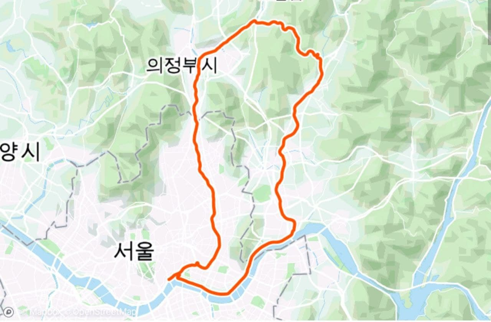
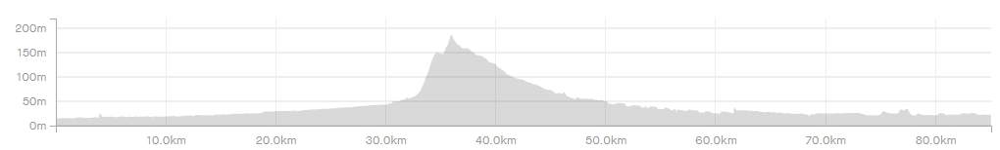

| 코스명 | 장화 코스 |
| 코 스 | 한강-중랑천-부용천-축석고개-광릉수목원-왕숙천-한강 |
| 거 리 | 85km |
| 시 간 | 3시간 45분 |
| GPX 파일 | 장화코스 GPX 다운로드 |


이번 라이딩은 근교의 장화코스를 선택하였습니다.
옥수역을 시발점으로 하여 장화코스를 완주하고 다시 옥수역으로 되돌아 오는 코스입니다.
전날 비가와서 그런지 바람도 상쾌하고 사람도 별로 없어 매우 쾌적한 라이딩이었습니다. 축석고개부터 광릉수목원을 제외하곤 대부분 평지라서 그리어렵지 않은 코스였습니다.
축석고개로 접어드는 길목만 잘 찾으면 길찾는데도 별로 어려움이 없었습니다. 얼마전 이화령을 다녀오고 나서 축석고개에 대한 두려움이 살짝 있었으나 막상 올라가 보니 큰 어려움이
없었으나
축석고개 전부터 광릉수목원을 가는 부분이 자전거도로가 없는 공도라서 조심해서 라이딩을 하였습니다. 광릉수목원에 다달으니 양옆으로 가로수길이 나타나면서 시원하고 멋진 로드가
시작되었습니다.
광릉수목원을 지나나 다시 자전거길이 나오면서 한강까지 어렵지 않게 라이딩을 할 수 있었습니다.
여름에 한번정도는 광릉수목원을 지나는 코스를 다시한번 라이딩 해보면 좋을것 같습니다.